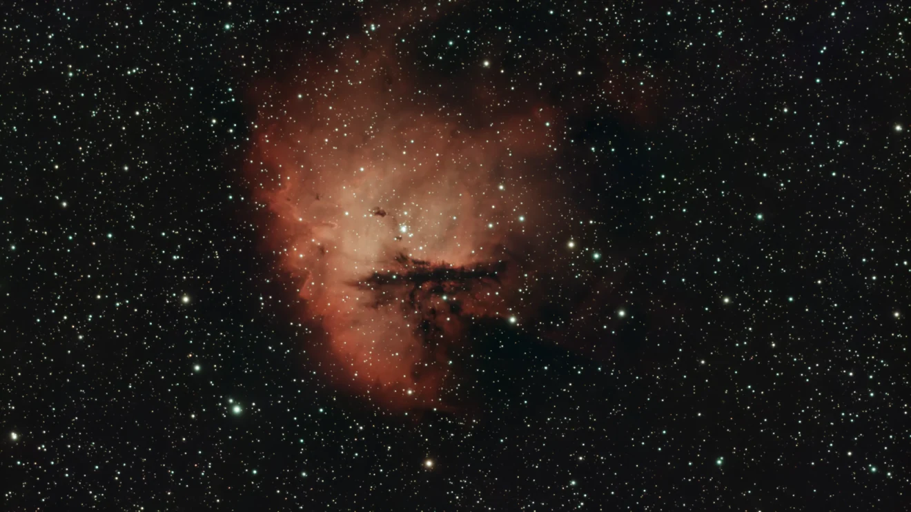
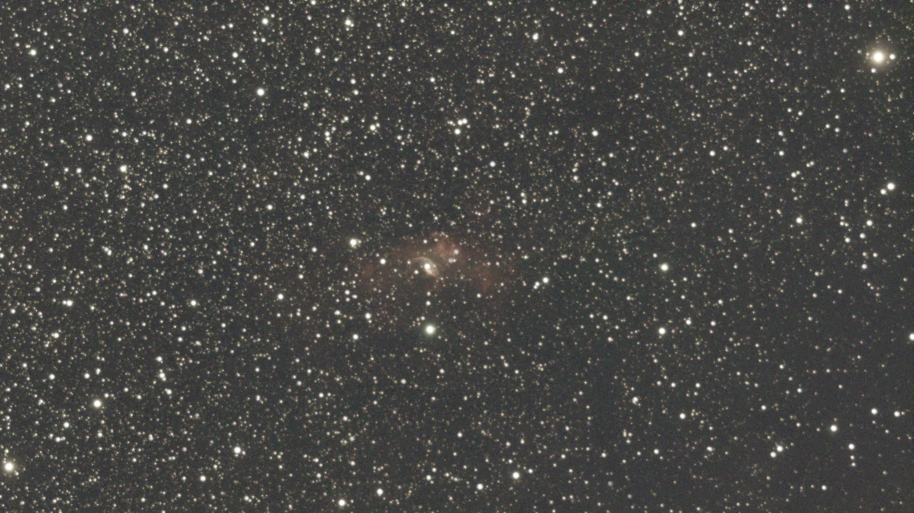

⌖
LOCAL PLATE SOLVING
Know where
you’re looking.
Skyshot Solver can identify image coordinates locally using a compatible catalogue index. Existing FITS WCS can also be reused.
Requires Skyshot CLI + catalogue indexASTROPHOTOGRAPHY, REIMAGINED
Professional astrophotography processing. Designed to reveal the hidden beauty of the universe.
A NEW WAY TO SEE
From the first stretch of a faint nebula to the final color in a galaxy’s arms, DSOpus gives your images a considered place to take shape.

REVEAL THE INVISIBLE
Purpose-built tools help you draw out faint structure, refine stars, and shape the signal already in your data.
All before-and-after images are genuine project samples. Star Shrink is built into DSOpus. deepSNR and StarNet++ require separately installed command-line tools. Background extraction, sharpening, and Astro Upscale run within DSOpus.
INTELLIGENCE MEETS ASTRONOMY
Ask questions about your active image, get help with DSOpus workflows, and search your image library by object name. Altair keeps chat history on your computer.
Altair connects to a hosted service and requires an internet connection. The configured model is NVIDIA Nemotron 3.5 Lightning through OpenRouter. Service availability and provider limits apply.
How Altair works ↗PRECISION PROCESSING
From familiar image controls to astronomy-specific analysis, the tools are there when you need them.

BACKGROUND EXTRACTION · PROJECT SAMPLELevels, Curves, Histogram, GHS, RGB and HSL correction.
Inspect FWHM, signal-to-noise ratio, and background noise.
Star Shrink is built in. StarNet++ integration can create starless images when the external CLI is installed.
Background extraction, sharpening, and non-generative Astro Upscale using Lanczos or bicubic resampling.
EXPLORE THE UNIVERSE
LOCAL PLATE SOLVING
Skyshot Solver can identify image coordinates locally using a compatible catalogue index. Existing FITS WCS can also be reused.
Requires Skyshot CLI + catalogue indexFRAME MOSAICS
Stitch multiple frames into a larger mosaic inside the desktop application.
Image processing runs locally3D FLY
Build an animated clip from image layers, with optional StarNet++ star removal and optional audio.
Audio attachment requires ffmpegTHE SOFTWARE
DSOpus is a desktop application for Windows and Linux, with FITS, PNG, JPG and TIFF support. Explore the live interface in the project repository.
Explore the source on GitHub ↗The repository does not currently include a verified application-interface screenshot. This section shows an authentic project image sample instead.
YOUR NEXT CLEAR NIGHT
Bring your astrophotography workflow a little closer to the stars.